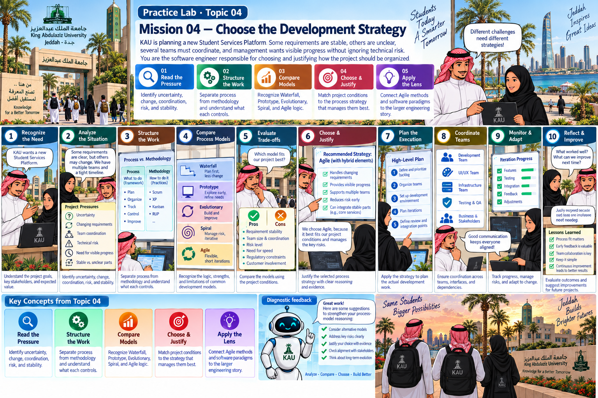

Practice Lab · Topic 04
KAU is planning a new Student Services Platform. Some requirements are stable, others are unclear, several teams must coordinate, and management wants visible progress without ignoring technical risk. You are the software engineer responsible for choosing and justifying how the project should be organized.
